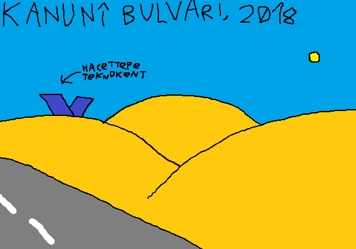
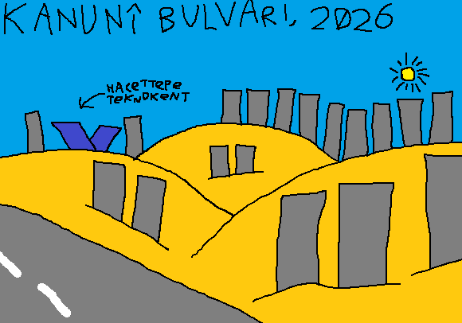
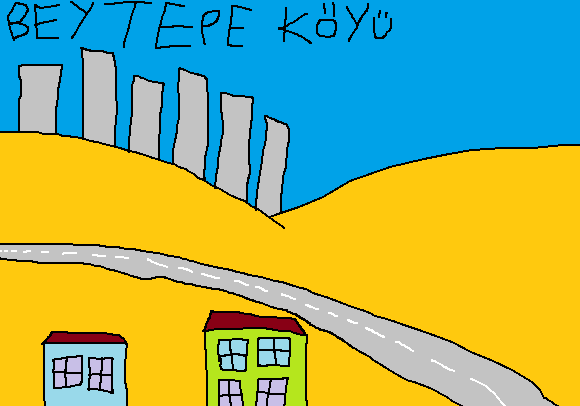
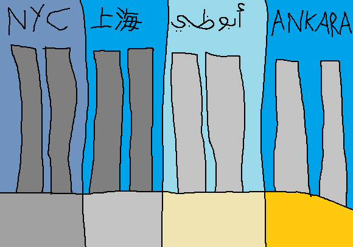
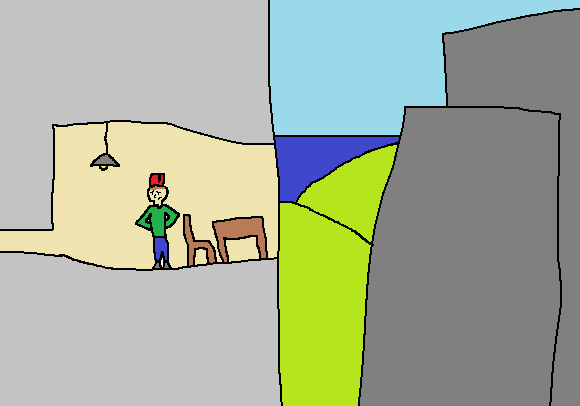
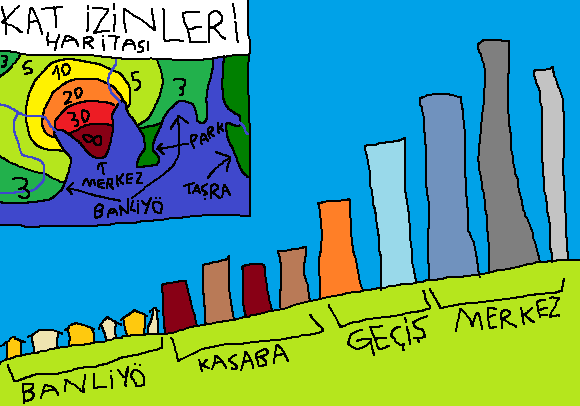

ANKÜ Öğrenci Partisi
Ankaralı Anti-Gökdelenciler Birliği
Misyonumuz ve Olayımız
Her günkü gibi şehir dışındaki banliyö kasabası İncek'ten geçiyordum.

Aradan yıllar geçti ve bu oldu:

Ah, şehirleşme. Mi? HAYIR.
Çarpık Kentleşme.
Görüntü Kirliliği.
Üstüne gökdelen dikilen çayır, şehir değildir. Nüfus problemi yok ama 10 katlı TOKİ'lerle hâttâ 5 katlı Gaziosmanpaşa evleriyle çözülebilecek bir göç krizi için Ankara'nın açgözlü müteahhitleri hem arsa sahibi çiftçiye, hem de buna izin veren devlet memurlarına para yediriyor.
Gökdelenler çocukluğumun geçtiği Çayyolu'nu, Beytepe'yi, Eskişehir Yolu'nu işgal ediyor ve halk göz yumuyor.
Belediye müteahhit çöplüğü Söğütözü'nü turizm cazibesi olarak kullanıyor ve şehir içinde yaşayan gençler "yeni merkez" İncek'e taşınıp gökdelenlerin kötülüğünü umursamıyor.
Bir kere bir cesur Beytepe müteahhitlerini kat iznini aşıyor diye dava etti ama yenildi.
Bana eski kafalı diyebilirsiniz ama umrumda değil.
Şimdi gökdelenlerden neden nefret ettiğimi söyleyeceğim:
1. Gökdelenler görüntü kirliliği yaratır, bunun yanında fakr-u zaruretle harap ve bitap düşmüş toplumun durumunu yüzlerine günün her saati gösterişleriyle ve lükslüğüyle resmen bağırır.

2. Gökdelenler aynılaşmaya sebep olur. Küçük binalar da aynılaşma yapabilir ama bunu bana değil Cittaslow'a sorun.

3. Megalofobi, extra kâr için 1+1 dairelerle klostrofobi ve akrofobi.

Peki nasıl olmalı? Bence gökdelenler olmalı ama çayır bayırın ortasına dikilmemeli, görüntü kirliliği yaratmamalı ve merkezden banliyöye piramit gibi gitmeli.
